micro opens a point cloud, block model, grid, or set of drillholes — however large — in about a second, with no import step. From there you view, query, derive, join, reconcile, validate, and produce report-ready figures. Every derived column and layer carries a provenance trail, and nothing ever touches the network.
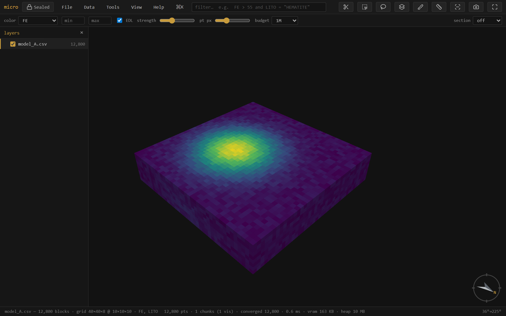
micro is a single self-contained HTML file — a viewer that grew into a workbench. It streams massive spatial-element files (never holding them fully in memory), so the first look is near-instant at any size and the picture densifies while you orbit.
It reads:
.dm, and Parquet, sub-blocked included.grd, ESRI ASCII .asc.msh (Leapfrog), OBJ, PLY-with-faces, LFM, Datamine wireframe pairsBeyond viewing, it does the everyday resource-geology work: filter and section; derive columns by expression, lookup, broadcast, resampling, or interpolation; domain by a solid; join and reconcile model versions; grade–tonnage, swath, and validation analysis; figure export. All of it runs against the source file, offline, with the provenance kept.
Four ideas explain almost everything else in this manual:
Tip — The fastest way to reach anything is the command palette: Ctrl/⌘K (or the ⌘K button). It searches every action and shows only what applies to the layer you have selected.
Drag a file (or several) anywhere onto the window, or use File → Open…. Several files at once become separate layers. The open dialog shows each file's detected role — an Open as ▾ on every row lets you override it (a block model as points, a PLY mesh as points, a delimited file as collar / survey / intervals), and drillhole trios assemble themselves from those roles.
No data handy? The empty state offers ▸ open the demo project — one click generates a full scene locally: a 1.8M-block iron model with realistic bimodal grades, a drillhole set threading the ore, pre-mining topography, three pit-phase shells, and the ore-shell mesh the holes chase — sectioned open on the lens, with a grade–tonnage curve already computed. Every workflow in this manual can be tried on it, and File → Save project as… writes it to a real folder you can inspect: plain CSVs, JSON manifests, no black box.
micro reads sub-blocked (octree) block models — where cells are refined into smaller boxes near a boundary or a high-grade zone — and renders each block at its true size, straight from the file. CSV/Parquet models with per-block dX/dY/dZ columns and Datamine .dm models with per-record XINC/YINC/ZINC are detected automatically; the model streams, picks, filters, and colors like any other. Join and reconcile handle them by volume — see Join & reconcile.
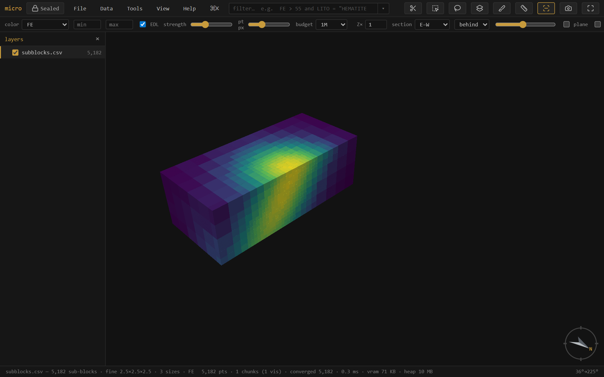
Note — Detection assumes an axis-aligned model with power-of-two (octree) refinement — the standard export. A rotated model currently opens as its centroids (points); interpreting a rotated model as boxes (enter or measure its azimuth) is on the roadmap.
p toggles the layers panel. Each opened dataset is a layer with its own color, filter, and visibility. Layers can be grouped and reordered by dragging; [ ] step the active layer, h hides/shows it, ⇧H solos it (press again to restore what was visible). Drillhole sets appear as their own group with collar and survey rows — see Drillholes.
Right-click a layer for its menu, organized top to bottom: identity (zoom, rename, reinterpret) · inspect & analyze (attribute table, filter, stats, grade–tonnage, swath, file info, lineage, export rows) · derive & store (interpolate, materialize, store as Parquet, index) · display (opacity, edges, sections, hide) · arrange (move, copy into project, remove) · Properties….
F2 renames the active layer. Rename layers… (on a group, a multi-selection, or the palette) batch-renames: one-click strip the common prefix/suffix, or find→replace with optional regex, with a live before→after table.
Drag to orbit, right-drag (or shift-drag) to pan, wheel to zoom. f fits the data. n s e w look level that way, d is plan, o toggles orthographic (needed for a true scale bar). Click a block or point to pick it — the record panel shows its full source row, calculated and derived columns included, with a fields picker to trim it to the columns you care about.
Vertical exaggeration — the Z× box on the instrument rail (or View → Vertical exaggeration) stretches the whole scene vertically so subtle relief or a flat-lying ore lens reads. It's a property of the view, not one layer: every layer stretches together and stays registered, and it's display-only — picking, measuring, and section cutting all stay in true coordinates. It travels with bookmarks and scenes.
Twenty minutes, no data needed, every major idea once. Open micro and click ▸ open the demo project on the empty state — it generates a small mining scene locally: a 1.8M-block iron deposit (cut open on an E–W section), a twelve-hole drilling program threading it, pre-mining topography, three pit-phase shells, and the orange ore-shell mesh. A grade–tonnage window is already computed on the right.
Drag to orbit, wheel to zoom, f to fit. The deposit is colored by iron grade — the yellow core is the lens. Hold Ctrl and roll the wheel: the section scrubs through the deposit, and watch the orange ring on the cut face — that is the ore shell's trace, the mesh drawn where the plane cuts it, with the topography a thin line above. Press l to face the section square-on. In the layers panel (p), open mining phases and toggle the phase shells; every layer has its own eye.
Press / and type FE > 55, then Enter. The deposit reduces to its high-grade core, live, and the status bar counts the matching blocks. Now click the ▾ beside the filter box: the drawer opens with your expression as a slider. Drag it — the threshold, the expression text, and the model all move together. Use add condition… to bring LITO in, click a chip to switch lithology, then remove the row with its ×. Nothing you do in the drawer is different from typing — it is typing, done for you.
In the layers panel, the demo group is the drillhole set: a ◈ collars row, a ↧ survey row, and the assay intervals. Click ◈ collars → Attribute table… — twelve holes, and notice EOH and COMPANY: PIONEER's early scout holes stopped at 150 m, MERIDIAN drilled to the floor. Now ◈ collars → Filter holes… and type COMPANY = "MERIDIAN" — the scout holes vanish from every interval table at once, because the filter lives on the collars and flows down the hole relation. Clear it (empty expression), then try Broadcast column to intervals → EOH: every interval now carries its hole's depth as a real column — color by it, filter EOH > 200, export it.
Select the deposit layer, then Tools → Calculated columns…. Name a column CLASS and type:
if(FE > 58, 2, if(FE > 45, 1, 0)) # 2 = high grade, 1 = mid, 0 = waste
Below the editor the ladder appears as a case table — each condition a row of widgets, each value a slider. Save it, then pick ƒ CLASS in the color dropdown: the deposit repaints as three grade classes. Go back to the window and drag the 58 slider — the model re-classes as you drag. That loop — define, color, tune — works for any expression over any columns, including the ones you just broadcast.
In the grade–tonnage window, set density expr to SG (the model carries specific gravity), cutoffs to 40, and Run. Real tonnes, forty cutoffs, both curves. Hover the plot to read values; ⧉ table puts cutoff · tonnes · grade on the clipboard for a spreadsheet. Try scope: filt with your FE > 55 filter still on — the curve recomputes for the filtered core only.
View → Decorations & figure…: turn on the scale bar, north arrow, and legend, give it a title, set the background to white, and Export figure. The PNG on your disk is exactly what you saw — report-ready.
File → Save project as… (Chromium) writes everything to a folder. Open that folder outside micro: models/ and drillholes/ hold plain CSVs, project.json the view state — and beside the deposit, deposit.csv.element.json. Open it in a text editor: your CLASS expression is recorded there as an operation, inputs and all. That file is the audit trail — everything you derived, readable without micro. Reopen the project any time; it comes back exactly as you left it, windows included.
Where next — deeper on each idea: the filter · the ƒ workbench · drillholes · join & reconcile · the project store. Your own data works the same way — drag it in.
The color dropdown drives the active layer: by elevation, a numeric channel (a grade), a category (a rock type), a painted column (✎), a materialized column (%), or a calculated column (ƒ — see the ƒ workbench). Pick a ramp per layer (viridis · spectral · magma · turbo · greys) in Properties → style; the min/max boxes clip the scale so outliers stop eating the ramp. On a grade channel, double-click the histogram to add breakpoints — classed turns them into a solid-color grade-shell legend.
A section is a live cut, and on block models it is a true cut: each block is clipped analytically against the slab faces, so the cut paints a continuous wall — with the block's color — instead of a ragged centroid cull, and the wall itself is pickable.
Meshes and surfaces draw their trace on the wall. A sectioned mesh doesn't hide the cut face: it renders as its intersection trace — a closed ore shell becomes an outline ring around the grade zone it encloses, a topo surface a thin line across the top — flattened onto the section face like a drafted section plot. The trace width follows the section-width control. A layer that should stay whole (topo for context, the drillholes threading a cut model) sets right-click → Cut by sections → don't cut.
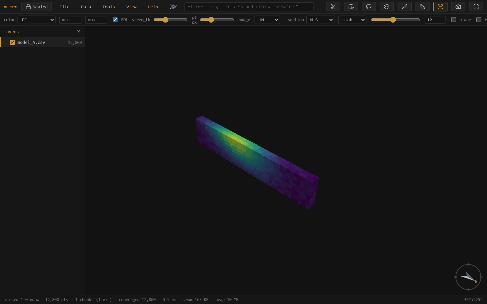
Pick a preset (plan · N–S · E–W), press k and drag a line (⇧ snaps 15°, ⇧⌥ 5°), or type a plane's dip-direction + dip. x toggles it, l faces it, ⇧L faces its back. , . step one slab at a time, and Ctrl+wheel scrubs the position continuously; Alt+wheel thickens or thins the slab. Follow makes the camera ride along as you scrub; 2D locks the view flat onto the section — drags pan instead of orbit — for section-by-section interpretation. m then two clicks measures 3D · plan · Δz between records. Per layer, Cut by sections picks how the section treats it: follow (the slab), keep front only / keep behind only (a half-space split at the plane), or don't cut.
Click any block, point, or interval to pick it: the record panel (right) shows the full source row — every column, including calculated, estimated, painted, and broadcast ones, each labeled by kind. The fields picker (search + all/none) trims the panel to the columns you care about, per layer, and the choice persists with the project. Picking works on section walls too — the block behind the cut face answers. In the attribute table the link runs both ways: click a row to pick it in the scene, pick in the scene to highlight the row.
m arms the tape: click two records and read 3D distance · plan distance · Δz in the status bar — bench heights, hole spacing, the plan width of a zone. The measurement anchors to picked records (not screen pixels), so it is exact in world coordinates and unaffected by vertical exaggeration. Press m again or Esc to put the tape away.
⇧B (or View → block edges) outlines every block — the classic wireframe-over-solid look for checking sub-blocking or lattice alignment. Each layer can override the global toggle from its context menu (always / never / follow).
t opens the layer's rows as a draggable, layer-pinned window — windowed reads, so a 1.8M-row model scrolls cold. matches shows only the filtered rows; click a row to pick it in the scene. In Properties → columns, scan columns streams the whole table once to fill n · mean · std · quantiles · histogram per column — the scan sees calculated and derived columns too.
Stats… (right-click a layer, or the palette) is the grouped summary report: pick columns, an optional group by (the category channel or any painted column — assign domains, then stats by domain is the classic resource table), and an optional weight expression (SG for density-weighted means — quantiles stay unweighted and the window says so). Same chassis as grade–tonnage and swath: scope (all / filt / sel), Run, ⧉ table TSV copy, save as recipe…, and the setup persists with the project.
/ focuses the filter box. It speaks a familiar expression language over every column — source, calculated, painted, materialized, joined:
FE > 55 and LITO = "HEMATITE"
AU_OK between 0.5 and 3 or DOMAIN in ("ORE", "HALO")
SIO2 > 10 and not (LITO = "CANGA") # comments are fine
Matching elements isolate; everything else drops out of the render, the table, and any analysis. Enter applies, Esc clears. The box is syntax-highlighted as you type, autocomplete offers columns, functions, and category values, and unknown names get a did-you-mean. The full language — operators, functions, quoting, comments — is in the reference.
On big files the filter stays fast for three reasons: Parquet models skip whole row-groups their footers prove can't match; CSV and .dm files skip stretches via the project's band index; and after one complete scan the touched columns stay pinned in memory (see the project store). The result is that dragging a widget re-filters millions of blocks in milliseconds.
The ▾ button glued to the filter box opens the drawer: your current expression projected as widgets. The expression stays the single source of truth — every control rewrites its own span of the text, so the box updates as you drag and your formatting survives.
between becomes a two-slider range row. The operator is a dropdown (> ≥ < ≤ = ≠ between) — switching to between converts the clause in place.in (…) chips toggle membership. The op dropdown offers = ≠ in not in.and ( … ) to seed a new group or ( all ) or … to wrap everything so far and start an alternative branch.# comments) for the expression itself, live-validated; reset restores the filter as it was when the drawer opened.Add a condition from the dropdown, then reshape it entirely with the widgets — nothing is locked in at add time.
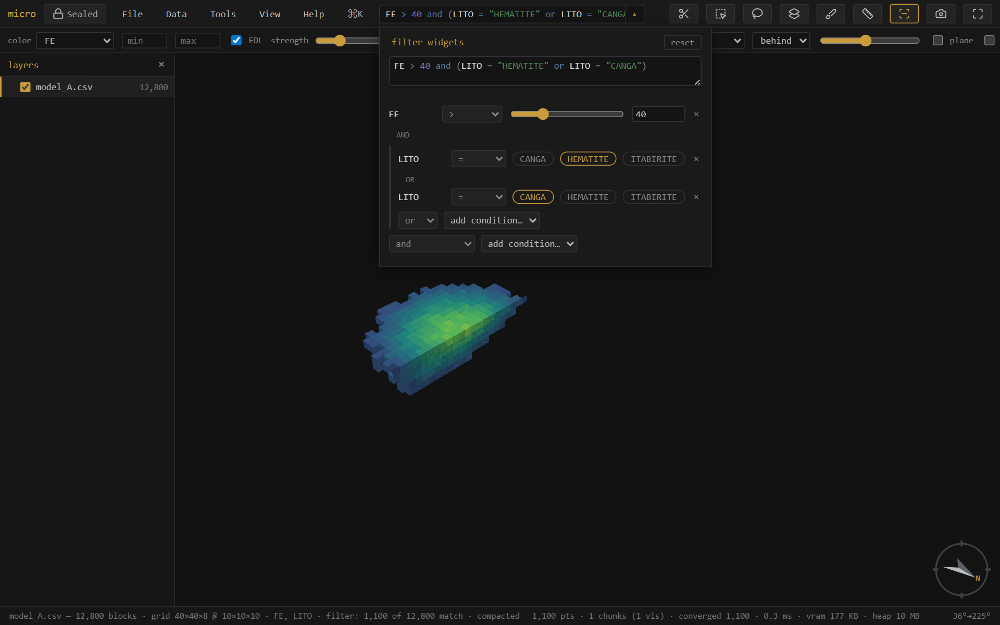
FE > 40 and (LITO = "HEMATITE" or LITO = "CANGA") — a slider with its operator dropdown, a bracketed group with clickable chips and an OR pill, a remove × on every row. Dragging the slider rewrites the expression above, live.A derived column behaves exactly like a source column: the filter, color ramps, stats, grade–tonnage, swath, the record panel, and every export see it. micro derives columns five ways, and each records how in the layer's provenance:
| Kind | Made by | Stored as |
|---|---|---|
| ƒ calculated | an expression (FE + 0.4 * MN) | a definition — computed on the fly |
| materialized | freezing a ƒ, or an interpolation (NN / IDW with anisotropy) onto this layer | a Parquet column beside the source |
| painted ✎ | brushing over the scene (b), or flag / assign-domains by a solid | a category column |
| joined | a key join or an own-lattice spatial join — see Join | materialized |
| broadcast | a collar column landed on drillhole intervals — see Drillholes | materialized |
Tools → Calculated columns… (or the ƒ button in Properties → columns) opens the calculations workbench: your ƒ columns listed on a rail, one editor on the right. The editor is multiline and syntax-highlighted, validates live against the layer's full schema — so a calculation can reference source columns, painted columns, materialized columns, and other ƒ columns (FE_EQ then DBL = FE_EQ * 2) — and the type is a visible choice (auto / number / text). Saving a definition immediately updates any live filter or color that uses it.
Typing the expression is the primary interface, but below the editor the definition also projects as widgets, the same contract as the filter drawer:
if(…) ladder renders as a case table — condition | value, row per case, plus else and add case. Density by lithology (if(LITO = "HEM", 3.9, if(LITO = "ITA", 3.4, 2.8))) becomes a table you edit with chips and sliders.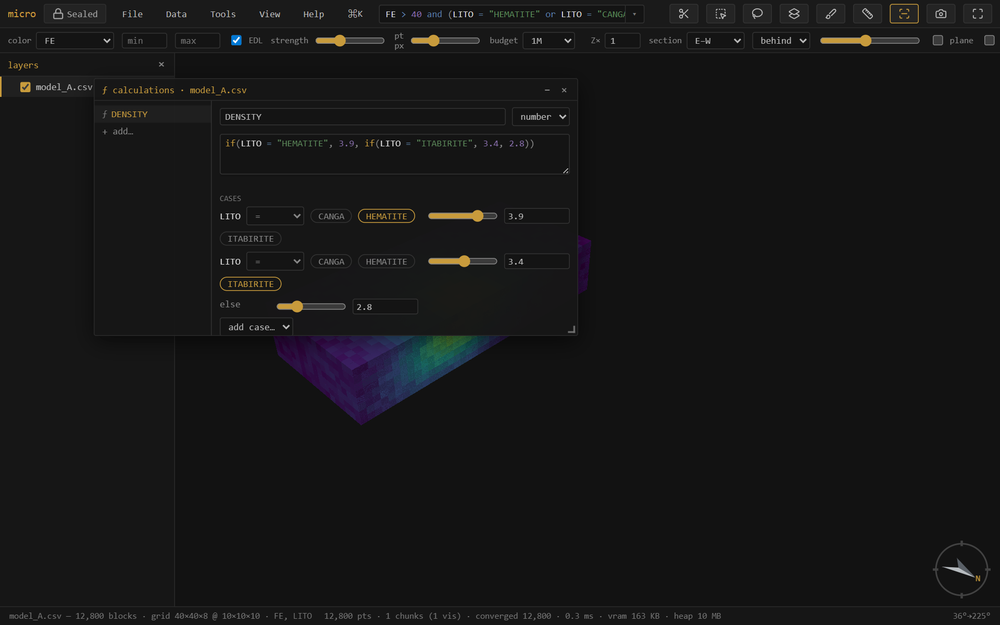
if() ladder — the highlighted expression on top is the truth; below it the same definition as a case table of chips and value sliders.Widget edits auto-save an existing column; typed edits wait for the explicit save. materialize → stored freezes a ƒ into a real Parquet column (it survives even if its inputs are later removed, and scans get faster); save as recipe… writes the whole column set as a re-runnable YAML — apply your standard derived columns to next month's model in one click.
Pick ƒ NAME in the color dropdown and micro computes the column once for display — a cached realization, recomputed automatically when the definition or anything it references changes, never written to disk (the definition is the provenance). With the constant sliders this closes the loop: drag the coefficient, the model recolors.
Interpolate from this… (right-click the source points/holes) estimates a value onto any spatial target layer — nearest-neighbour or IDW, with a full anisotropy ellipsoid (ranges + dip-direction / dip / pitch), min/max samples, and expression filters on both the input samples and the output records. The result is a materialized column on the target — not a new layer — with the method and parameters recorded. Run several estimates as separate columns, then compose the final with a ƒ (coalesce(AU_domA, AU_domB)): every step stays auditable. If you need a fresh lattice first, New… → grid / block model creates one, and interpolation targets it like any layer.
A drillhole set is three tables bound by the hole id — collars (one row per hole), survey (deviation stations), intervals (from/to samples) — and micro keeps that structure first-class rather than flattening it away.
Every load lands as a set group: the group is the drillhole set, with a ◈ collars row (hole count), a ↧ survey row (desurvey method), and one interval layer per interval table. The rows are live — click one for its menu:
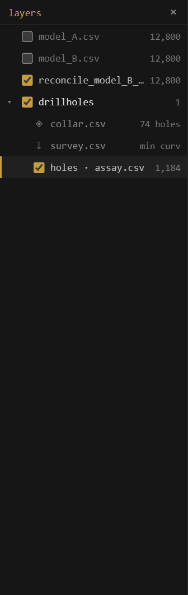
Filter holes… takes an expression over the collar columns — EOH > 200, COMPANY = "ACME", a campaign year — and applies the verdict through the whole set: only the matching holes' intervals stay visible (in every interval table at once), the traces redraw for the matching holes only, and the interval filter box then works within the kept holes. Nothing is copied or materialized — it's a live mask driven by the hole relation, and it persists with the project.
COMPANY = "MERIDIAN" on the collars keeps that campaign's holes — the interval count drops and the traces redraw for the matching holes only, across the whole set.Broadcast column to intervals lands a collar column on every interval, matched by hole id — so EOH, the logging company, or a campaign field becomes a real interval column you can filter, color, and export by. Numeric columns materialize to the project's column store; text columns become category columns with a legend. The operation is recorded with its inputs, like every derivation.
Intervals render as true cylinders (Stick radius… sets the world-space radius). Color by any interval column; sections cut the sticks true, and the set usually reads best with the model sectioned and the holes set to don't cut, threading whole through the opened deposit — which is exactly how the demo project arranges itself.
Select with r (rectangle) or v (lasso): what you see gets selected (occlusion-honest, all visible layers), tinted gold — shift adds, alt subtracts, Esc clears. The select-through toolbar toggle flips to the extruded tube: everything whose position falls inside the shape, occluded included.
Select by solid / surface (Tools menu, or right-click a mesh) classifies records against a closed mesh by winding number: select inside/outside, write a flag column, or a fraction-inside 0–1 column. Open surfaces (topo, weathering horizons) classify above / below / between. Assign domains runs the whole coded-model loop — pick the domain solids and a column name, and every block goes to the solid holding its largest fraction.
Paint a column (b) is interactive domaining by hand: a category column you fill by brushing over the scene. Painted values are real columns the filter, table, and export all see.
Selection → column… (right-click the layer, or the palette) materializes the current selection as an explicit 0/1 column — every row gets a value, so it filters (SEL = 1), edits like any painted column, and rides every export. Selections themselves also persist in the project.
Two model versions, or a lookup table? The join tab (Properties → join) brings data across — and it follows one rule: if the operation keeps this layer's records, the result lands as columns on it; only an operation that changes the record set makes a new layer.
Reconcile is the preset: it produces a colored Δ map (this model − reference) on a common lattice, with a diverging ramp centered on zero — blue where the new estimate is lower, red where it's higher. The summary reads matched · mean Δ · mean|Δ| · added · removed.
Sub-blocked models reconcile by volume: each variable-size block is aggregated onto the reference (parent) grid weighted by the space it fills, so a sub-blocked estimate compares cleanly against a regular one at the parent resolution.
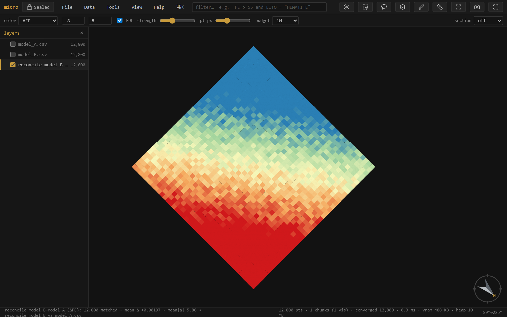
Tip — The Δ ramp auto-clips to the full range, which extreme blocks can widen. Tighten the min/max boxes (e.g. ±2× the mean|Δ|) to make the local pattern read, as above.
Grade-tonnage… (right-click a model, or the palette) draws tonnage and mean grade above cutoff. It shares the swath's interface: a config rail of series, each one a layer + grade column + declared unit + density expression + optional row filter — configure, then Run. Because series pick their own layer, model-vs-model curves (this estimate against the last one) are one window; on a reconcile layer the reference/new pair is pre-seeded. Derived columns — calculated, materialized, joined — are all offerable as the grade or the density.
SG, 2.7, SG * PARTIAL) — tonnage = density × block volume, with a declared density unit converted to t/m³ so tonnes are tonnes. Blank = count/volume.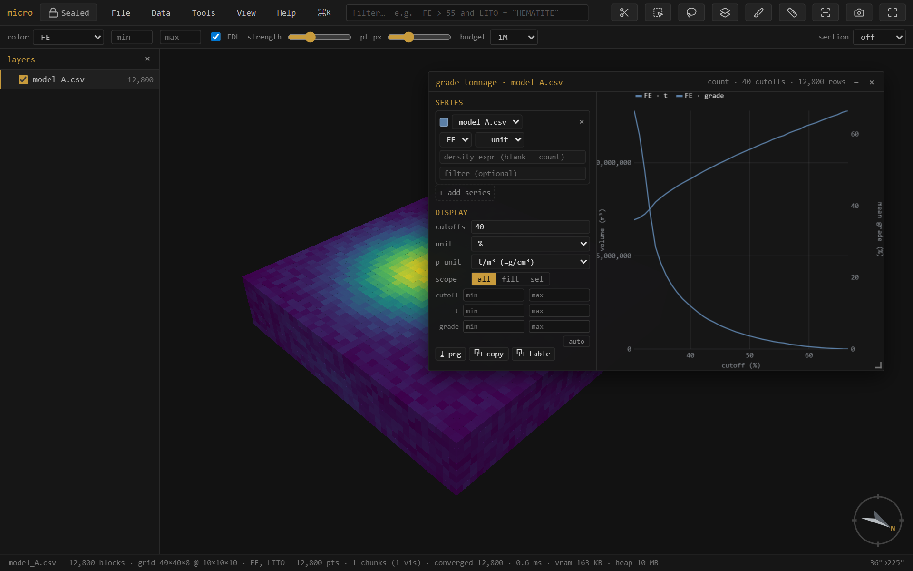
Swath plot… shows mean grade per band along a direction — the classic drift check for local bias. The direction can be the grid axes X/Y/Z, an oriented trio from dip-direction / dip / rake (across-structure · along-strike · down-dip), or a single trend / plunge. Series work exactly like grade–tonnage's: layer + column + declared unit + a free weight expression (blank = block volume) + an optional per-series row filter — so kriging vs nearest-neighbour vs declustered samples overlay in one plot.
One Run streams everything once into fine bins; after that, band width and offset re-bin instantly — and they are per direction, so your E–W drift keeps its 25 m bands while the bench-by-bench Z profile keeps 10 m. Manual axis ranges, ⤓ png / ⧉ copy / ⧉ table (band · count · weight · per-series mean, TSV) match grade–tonnage.
Zebra paints the alternate bands onto the 3D, so the slabs you see in space are the bins in the plot.
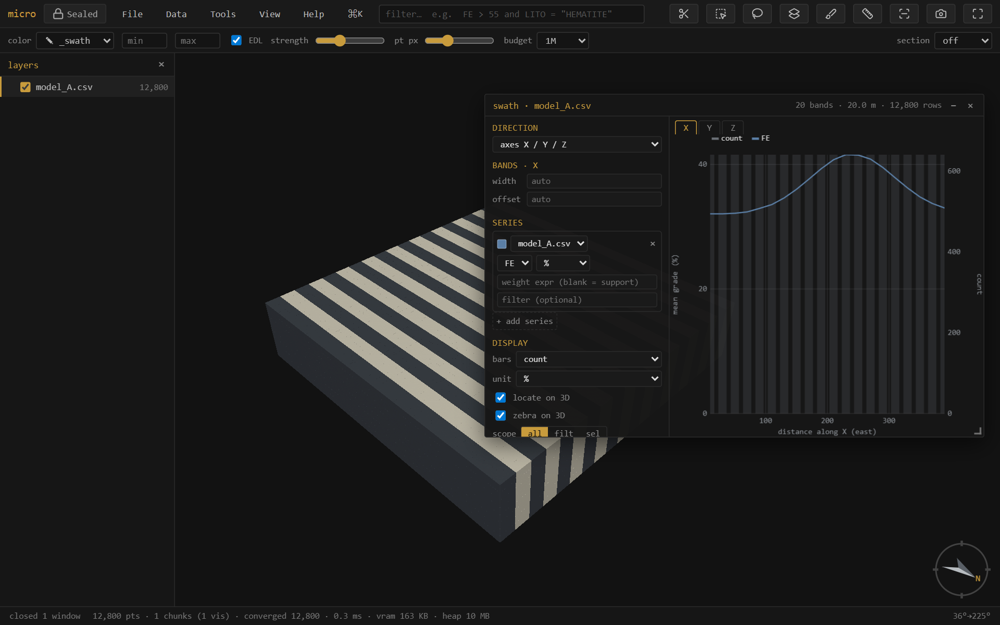
With locate on 3D on (it is by default), hovering the swath plot lights that band on the 3D as a translucent slab outline — so a dip in the profile points straight at the benches or the zone that caused it. Drag across the plot to hold a band range (violet), then turn it into a real 3D selection right from the menu that appears — and from there it's linked brushing, a 0/1 column, or an export like any other selection.
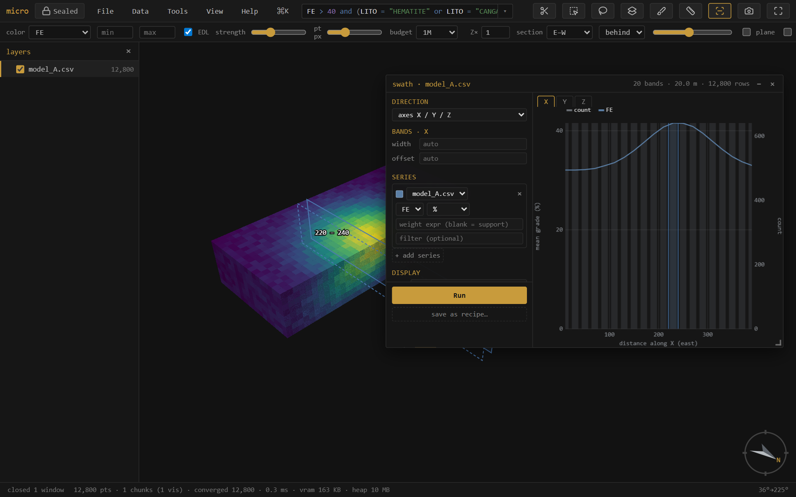
Is the model consistent with the samples it was built from? Validate vs drillholes… takes a block model and a drillhole layer, declusters the sample grades (spatial sampling over-drills high grade, so a naïve sample mean is inflated), and reports the global bias (model mean vs declustered sample mean) plus a model-vs-sample swath along X/Y/Z.
Note — The validation window is temporarily hidden from the menus while it's rebuilt on the new analysis chassis (per-series units, weight expressions, scopes). The machinery it uses — declustering, sample swaths — is unchanged; meanwhile the swath window already overlays model vs drillhole-sample series directly.
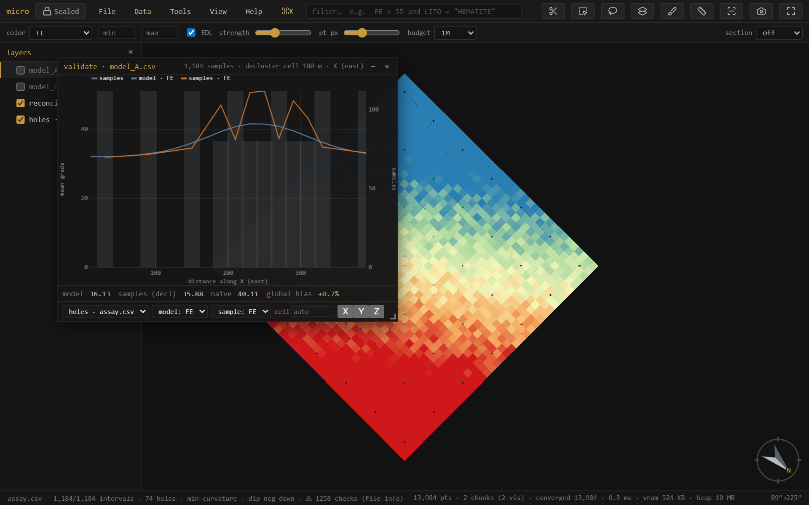
Note — Samples are point support, blocks are block support, so a global grade offset between them can be real (change of support), not an error. The swaths are what flag local, conditional bias.
The grade-tonnage and swath windows carry an all / filt / sel scope. sel follows the 3D selection: rubber-band a bench, a domain, or a suspect zone and the plot recomputes for just those blocks, live, as you brush. filt follows the filter box instead — type LITO = "HEMATITE" and every open analysis window scoped to it re-runs with each new expression. The analysis becomes interactive regional exploration, not a whole-model summary.
Every derived layer and every derived column remembers how it was made. Opening a file is a leaf; a join, reconcile, or optimize wraps its source layers with the operation, its parameters, the build, and a timestamp — a tree. An estimated, broadcast, or joined column records its operation and inputs the same way, in the project's element manifests (see the project store). Lineage… shows the layer tree and exports a readable HTML report you can attach to a sign-off. Parquet exports carry the lineage embedded in the file, so the provenance travels inside the data.
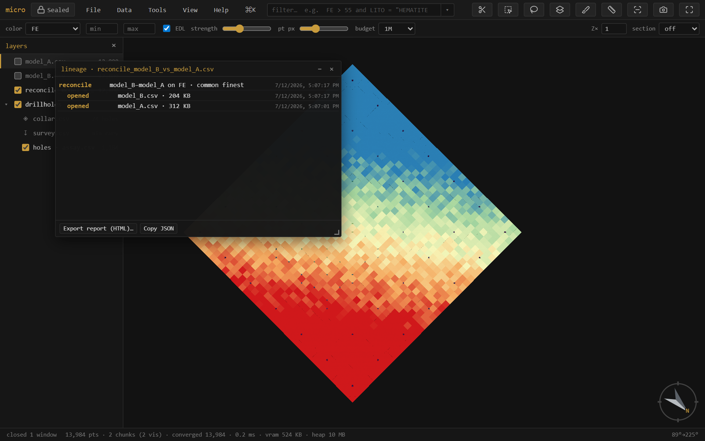
GeoTIFF / Surfer .grd / ESRI .asc open as heightfield layers — an elevation point cloud where cells are pickable records (huge DEMs decimate for display while the full grid stays for evaluation). A mesh right-click → Rasterize to grid… renders it onto a DEM (the surface↔grid converter, with fill / extrapolation for gaps). New… → grid / block model creates empty grids from parameters, covering a layer's bounds, or — cover compatible models — on a lattice that covers and is compatible with several models at once (the reconcile target). Grid layers export as ESRI ASCII.
Right-click a grid → Reinterpret as → surface renders it as a solid, smooth-shaded relief mesh — a DEM reads as terrain, not a gappy point cloud. In Properties → Style a surface then offers:
Surface, drape, flat, and band all persist in the project — reopen and the terrain comes back exactly as you left it. Sectioned surfaces draw their trace on the cut face (see Sections), and layer opacity applies — a translucent topo over an opened pit.
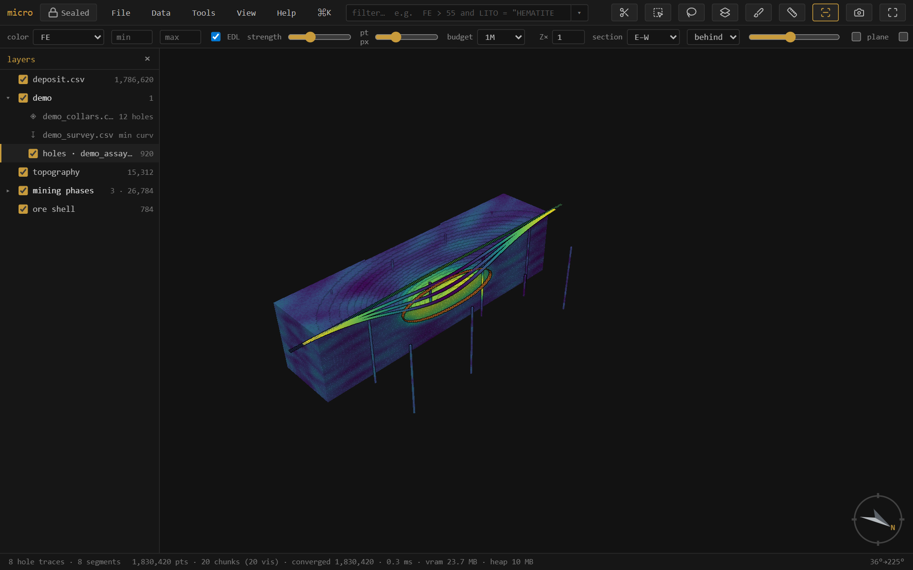
Extend to footprint… (right-click a surface — mesh or grid) grows it to cover a chosen extent: nearest holds the boundary z flat (the "extend the outer ring" move), trend continues the fitted dip. A topo that stops short of the model no longer leaves blocks unclassified — extend it, then flag above/below covers everything. Combine surfaces… rasterizes two or more surfaces onto one lattice and resolves the overlap by a rule: min (topo ∧ weathering base — take the lower), max, first (list order is priority — patch an end-of-month survey into the original topo), or mean. Both produce grid layers — exact and fast for flags and reconcile — with the rule recorded in the layer name and its lineage; export .asc anytime.
A micro project is a plain folder, readable without micro. This section is its anatomy, because auditability means being able to open the hood:
my-project/ ├─ project.json view state — layers, styling, camera, windows ├─ models/ │ ├─ deposit.parquet the model, Morton-sorted (spatially indexed) │ ├─ deposit.parquet.element.json the DATA MODEL — columns, ops, provenance │ ├─ deposit.parquet.meta.json cache: discovery + stats + band index │ └─ deposit.parquet.cols/ │ ├─ AU_OK.parquet an estimate — one Parquet file per column │ └─ DOMAIN.parquet a category column, strings ├─ drillholes/ │ ├─ collars.csv · survey.csv · assay.csv │ └─ dh.element.json the SET: locations, hole relation, desurvey op ├─ grids/ · meshes/ · clouds/ ├─ bookmarks/ · scenes/ one small JSON per saved view └─ recipes/ analysis setups as commented YAML
Store as Parquet… (right-click a CSV/.dm model) converts it Morton-sorted, so each row-group's footer becomes a tight spatial index and queries skip whole row-groups they can't match. The dialog says exactly what will happen — per-layer rows, sizes, and a keep original option — and the same conversion runs when you save a project (a one-time, remembered choice: always / ask / off). Painting stays editable through the reorder, the file self-describes (grid, extents, categories in its metadata, so it reopens with no discovery pass), and the whole thing round-trips. Parquet block models also open streamed, holding nothing decoded, with predicate and spatial push-down on the filter.
Beside each data file the project writes <file>.element.json: a readable description of the element — its geometry interpretation, its record locations (a drillhole set lists collars, vertices, and one location per interval table, related by the hole id; a grid lists its lattice with coordinates implicit), its columns, and an ops list: every derivation (a calculation's expression, an estimate's method and parameters, a broadcast's source column, a join's inputs) recorded as data. The ops list is the audit trail — open the JSON and read exactly how every derived column came to be. It's also how the project restores: definitions reload from the manifest, and derived data that's missing or stale is simply re-derivable.
Derived columns that carry data — estimates, materialized calculations, joins, broadcasts, painted domains — live in a <file>.cols/ folder as one Parquet file per column (numeric as floats, categories as strings). Small, typed, self-describing, and readable by anything that reads Parquet.
Files in a project also get a small .meta.json sidecar at save time: the discovery result (grid, extents, sub-blocking, categories — reopening skips the sweep entirely, even on a 13 GB .dm), column statistics, and a band index that lets filters skip stretches of CSV/.dm files that provably can't match. Sidecars are a cache: delete one and micro re-scans.
In memory, scanned columns pin into a budgeted cache (View → Filter column cache: off / auto / a size in MB — auto scales with your machine) so repeat filters and widget drags run with no file reads; derived-column values share the same budget and quietly reload from their sidecars when evicted. The memory panel (Help → memory) shows what's held.
View → Decorations & figure… toggles a scale bar, north arrow, color legend, and title onto the viewport — they show live and are captured verbatim by Export figure (at 1× / 2× / 3× scale for print). Legends are per layer — stack one per model when several share the view, each with its own title. Set a background (white or paper for print; the decorations flip to dark ink to stay readable). The exported PNG is what you see, ready for a report — and it pairs with the lineage report for a fully auditable figure. The analysis plots have their own ⤓ png / ⧉ copy / ⧉ table buttons.
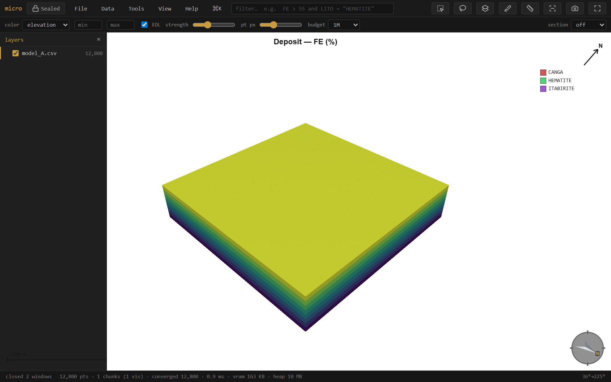
In a Chromium browser, File → Open project folder keeps your layers, styling, filters, selections, camera, section, bookmarks & scenes — and your open analysis windows (see Windows) — in a plain folder (project.json + the data files). Ctrl+S saves.
The folder is organized by data kind — models/ drillholes/ clouds/ meshes/ grids/ — with each file's manifest and sidecars beside it (see the project store). Tidy project folder migrates an older flat project in place, and Scan folder for new data treats the folder as an inbox: drop a file in by hand (or from another tool) and micro picks it up. A loose layer (opened from outside the folder) offers Copy into project from its context menu — always with a sized consent step, never silently.
Export rows… writes any layer back out — scope all / filter matches / selection, every column including calculated, painted, estimated, and joined ones, as CSV or Parquet. Opening a .dm and exporting is the .dm→CSV (or →Parquet) converter.
Two ways to save a view, under View → Bookmarks and View → Scenes. A bookmark is a viewpoint — camera + section — the quick nav aid: drop a few (Save bookmark…) and jump between them with the number keys 1–9. A scene is the full working state — camera + section plus each layer's visibility, color-by, and filter, so applying one puts the whole scene back the way it was (Save scene…, or Save scene (with selection)… to also pin the 3D selection). Applying a scene names any layer it wanted that isn't loaded, and skips it. Both live as small JSON files in the project folder — bookmarks/ and scenes/, one per entry — so they travel with the project, are hand-editable, and get picked up by Scan folder for new data. There is no fly-through: applying a view snaps straight there.
save as recipe… (next to Run in the grade–tonnage, swath, and stats windows, in the Calculations window, and in the decorations panel) writes the current setup as a named YAML file in recipes/ — every series, unit, weight expression, band, scope, and range; for calculations, the whole column set. A figure recipe captures the view + section + decorations + background + export scale; running it re-renders, exports the PNG, and restores everything it touched — the monthly plan-view figure regenerates itself. Tools → Recipes lists them; picking one opens the tool configured and runs it. Recipes are plain, commented, hand-editable files — copy one between projects, keep an office standard set, drop one into the folder and Scan folder picks it up. Series reference layers by name; if the named layer isn't loaded, one question asks which loaded model to use instead — that's the whole parameter system. A recipe is data, never code: the strict YAML subset can't carry a script.
# micro recipe — grade-tonnage. Hand-edit freely; series reference layers by NAME.
name: "Monthly GT"
tool: "gt"
params:
nCut: 15
gradeUnit: "pct"
series:
- layer: "model.parquet"
col: "FE"
weight: "SG"
Export mesh… (right-click a mesh layer; multi-selections and groups get Export N meshes…) writes OBJ, PLY, MSH (Leapfrog/ARANZ), or LFM. OBJ and LFM are multi-mesh — one named object per layer, with each layer's tint carried as the LFM color — while PLY and MSH merge multiple layers into one mesh. Exports re-read the source geometry, so coordinates leave in full double precision (the PLY writer uses double — at UTM northings, float32 would cost half a meter). A Datamine wireframe pair in, an LFM out: micro is also a mesh-format converter.
The analysis, table, calculations, and paint windows are all draggable and pinned to their layer (open several at once). View → Windows… lists every open window — click to focus, or Cascade and Close all to tidy up.
Grade–tonnage and swath setups persist in the project: every series, unit, weight expression, band width, scope, and manual range is snapshotted on each Run and on close, and a window left open when you save is pinned — reopening the project brings it back in place, configured, reading restored — Run to compute. Run stays manual, so a huge project never surprise-scans on open.
micro is Sealed: it makes no network requests — a browser security policy (connect-src 'none') blocks every connection, so there is no telemetry, no cloud, and no auto-update. Your data — point clouds, block models, drillholes — stays on your device. The build is WASM-free with the runtime in the clear, so the code is readable and auditable rather than opaque binary.
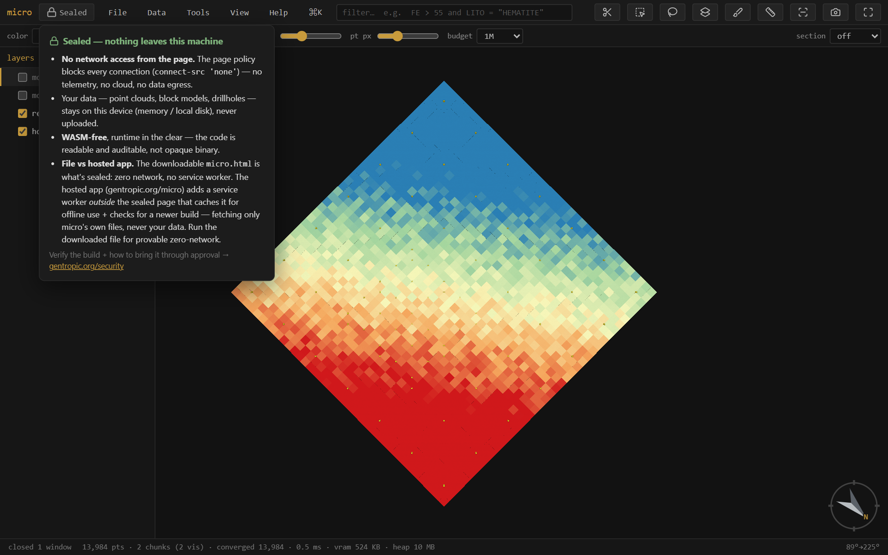
Verify the build and read how to bring it through approval at gentropic.org/security.
micro runs at gentropic.org/micro — install it as an app from the browser, or download micro.html: one file, no installer, that you can keep, e-mail, drop on a shared drive, or run fully offline by double-clicking. There is nothing to set up and nothing that phones home. Works in current Chrome / Edge / Firefox; project folders and mounts need a Chromium browser.
Which browsers work? Current Chrome, Edge, and Firefox all run micro. Project folders, disk mounts, and Save-as need a Chromium browser (Chrome/Edge) — Firefox opens and analyzes everything but can't hold a folder connection.
How big is too big? There isn't a hard limit — micro streams, so opening is near-instant at any size and memory stays bounded. The practical costs are per-scan: the first filter or analysis over a huge CSV reads the file once (a 13 GB Datamine file is a few tens of seconds), after which sidecars, push-down, and the pin cache make repeats fast. For models you'll work with daily, Store as Parquet… is the single biggest speedup.
My filter is slow on a CSV / .dm. Run Build index (right-click the layer) or just save the project — the band index lets filters skip file regions that can't match. Or convert to Parquet, which also gets spatial push-down.
micro looks memory-hungry / I want it leaner. View → Filter column cache sets the budget (off / auto / a size). Cached columns and derived values evict under the budget and reload from disk when needed; off disables caching entirely. Help → memory shows what's held.
A numeric column isn't offered for color / grade–tonnage. The type sniff read it as text (a stray unit string or thousands separator will do it). Right-click the column in Properties → columns → Number.
LAZ files? Not yet — micro is deliberately free of compiled decoders (see Sealed), and LAZ needs one. Convert to LAS, or export XYZ.
Rotated block models? They open as centroids (points) today; box rendering assumes an axis-aligned lattice. On the roadmap.
Sub-blocks come up as points. Detection needs per-block dimension columns (dX/dY/dZ or XINC/YINC/ZINC) and power-of-two refinement. Odd ratios fall back to centroids — everything still works, blocks just draw as points.
Can I run it fully offline / air-gapped? Yes — that's the design. Download micro.html, copy it anywhere, double-click. Nothing phones home either way; the offline copy just makes it visible.
Something looks wrong / a file won't open. i (file info) shows what micro detected — column mapping, grid inference, parse warnings. Most import surprises are visible there, and the mapping can be corrected in place.
| Key | Action | Key | Action |
|---|---|---|---|
| ⌘/Ctrl K | command palette | / | focus the filter |
| f | fit the data | p | layers panel |
| n s e w | look level that way | d / u | plan / from below |
| o | ortho / perspective | x | section on/off |
| k | knife — drag a section (⇧ snap 15°, ⇧⌥ 5°) | l / ⇧L | face the section / its back |
| , . | step one section slab | Ctrl wheel | scrub the section |
| Alt wheel | slab thickness (thicker / thinner) | 1–9 | jump to bookmark |
| m | measure | i | file info |
| r / v | select rectangle / lasso | b | paint a column |
| t | attribute table | [ ] | step the active layer |
| h / ⇧H | hide–show / solo the active layer | F2 | rename the active layer |
| ⇧B | block edges | ⇧P | properties |
| Ctrl S | save project | Ctrl Z | undo paint |
| Esc | clear selection / cancel |
A credit-card and A6 printable shortcut card covers the same vocabulary, laid out for a laminator.
One language everywhere — the filter, calculated columns, density and weight expressions, per-series filters, the hole filter. It is total: an expression can compare and compute but never loop, call out, or crash a scan — a blank input gives a blank result.
| Comparisons | > >= < <= = != · between a and b · in (a, b, c) · contains "txt" · like "A%_1" (SQL wildcards) · matches "regex" · is blank / is filled |
|---|---|
| Boolean | and · or · not — with parentheses for grouping |
| Arithmetic | + - * / · ^ (power, Python-style precedence) |
| Numeric fns | round int abs floor ceil mod log log10 exp sqrt pow min max clamp bin |
| Blank handling | coalesce(a, b, …) (first filled) · nullif(x, v) (sentinel → blank: nullif(AU, -99)) · ifnum isnum isblank isfilled · the blank literal |
| Text fns | upper lower trim len left right substr replace concat |
| Conditional | if(cond, then, else) — nests into case ladders |
| Names | plain column names as-is (case-insensitive); anything with spaces or symbols in backticks: `Assay Au ppm` (the pandas convention) |
| Text values | in double quotes: LITO = "HEMATITE" |
| Comments | # to end of line — expressions may span multiple lines |
not is a true complement: not (AU > 5) keeps blanks (they fail AU > 5), so it is not the same as AU <= 5 — a deliberate, documented choice that makes filter + inverted-filter always cover the whole table. Autocomplete offers columns, functions, and category values — Tab / Enter accepts.
| Task | Expression |
|---|---|
| Sentinel values (−99) to blank | nullif(AU, -99) |
| Cap grades for a resource case | clamp(AU, 0, 30) |
| Merge two estimates, first filled wins | coalesce(AU_OK, AU_ID2) |
| Grade classes as a numeric code | if(FE > 58, 2, if(FE > 45, 1, 0)) |
| Density by lithology | if(LITO = "HEM", 3.9, if(LITO = "ITA", 3.4, 2.8)) |
| Iron equivalence | FE + 0.4 * MN |
| Tonnes per block (10×10×5 m) | SG * 500 |
| Contained metal (%, per block) | FE / 100 * SG * 500 |
| Normalize messy hole ids | upper(trim(BHID)) |
| Everything except two domains | not (DOMAIN in ("WASTE", "AIR")) |
| Filter to assayed rows only | AU is filled and AU > 0 |
| Log-scale color for a skewed grade | log10(clamp(AU, 0.01, 100)) |
| Flag suspicious duplicates of a cap value | FE = 68 # exactly at the clamp |
| Bench index from elevation (10 m benches) | floor(ZC / 10) |
Each of these works anywhere an expression is accepted: the filter box, a ƒ column, a density or weight slot, a per-series filter, the hole filter (over collar columns).
| Format | Read | Write | Notes |
|---|---|---|---|
| CSV / TXT / DAT | ✓ | ✓ | delimiter sniffed (, ; tab); block models need coordinate columns; per-block dX/dY/dZ → sub-blocked |
| Parquet | ✓ | ✓ | streamed with predicate + spatial push-down; micro's own store (Morton-sorted, self-describing metadata) |
Datamine .dm | ✓ | — | block models + wireframe pairs (…pt.dm/…tr.dm); per-record XINC/YINC/ZINC → sub-blocked; export via CSV/Parquet |
| LAS | ✓ | — | point clouds; LAZ is not read (needs a compiled decoder — see §20) |
| PLY | ✓ | ✓ | points or mesh; writes double coordinates |
| XYZ / PTS | ✓ | — | plain point dumps |
| OBJ | ✓ | ✓ | meshes; multi-object on export |
| MSH (Leapfrog/ARANZ) | ✓ | ✓ | single mesh |
| LFM | ✓ | ✓ | multi-mesh with colors |
| GeoTIFF | ✓ | — | grids incl. multi-band + overviews (COG-friendly); no compiled codecs — LZW/deflate/PackBits |
Surfer .grd | ✓ | — | ASCII + binary |
ESRI ASCII .asc | ✓ | ✓ | the grid export |
Column conventions the sniffers look for — coordinates: XC/YC/ZC, X/Y/Z, EAST/NORTH/ELEV-style names; sub-block sizes: dX/dY/dZ, XINC/YINC/ZINC, DIMX/DIMY/DIMZ; drillholes: a hole id (BHID/HOLEID-style), FROM/TO on intervals, DEPTH/AT · AZ/BRG · DIP on surveys. Everything the sniff decides is shown in file info (i) and correctable there.
| element | one dataset as micro models it: geometry interpretation + record locations + columns + recorded operations |
| location | a record space within an element — a block model's cells; a drillhole set's collars, trajectory vertices, and intervals |
| ƒ (calculated) column | a column defined by an expression, computed on the fly; nothing stored |
| materialized column | a derived column whose values are stored (a Parquet file in .cols/) — estimates, frozen ƒ, joins, broadcasts |
| painted column | a category column filled by hand (brush) or by a solid/surface classification |
| broadcast | landing a collar column on drillhole intervals by the hole id |
| op | a recorded, re-runnable derivation — the expression / method / inputs, stored as data in the element manifest |
| element manifest | <file>.element.json — the readable description of an element and the audit trail of its ops |
| sidecar | a small file micro keeps beside yours: .meta.json caches, .cols/ columns, display grids |
| pinned column | a column held in memory (under the cache budget) after a scan, so repeat filters skip the file |
| section / slab | the live cut: a plane with thickness; blocks clip against it analytically |
| trace | a sectioned mesh's intersection outline, drawn flattened on the cut face |
| isolate | what the filter does: matching records stay, everything else leaves render, table, and analysis |
| declustering | down-weighting spatially clustered samples so a mean isn't dragged by infill drilling |
| lineage | the derivation tree of a layer — what it was made from, with parameters and timestamps |
| Sealed | the security posture: no network requests possible, no compiled code, runtime readable |
| recipe | an analysis setup saved as commented YAML — re-runnable, hand-editable, data not code |
anisotropy (interpolation) — §6
attribute table — §4, §7
autocomplete — §5, App. A
background (figure) — §17
band ghost — §11
band index (filter push-down) — §16, §22
block edges — §4
bookmarks — §18
breakpoints / classed ramp — §4
broadcast (collar → intervals) — §7, C
calculated (ƒ) columns — §6, App. A
case table (if-ladder) — §6
category legend — §4, §17
color by ƒ — §6
command palette — §1
comments (#) — §5, App. A
cutoffs — §10
declustering — §12, C
demo project — §2, §3
density expression — §10, App. A
desurvey — §7
drillholes — §7
element manifest — §16, C
export (rows / mesh / grid) — §18, §15
figures & decorations — §17
file info — §22, App. B
filter — §5
filter drawer (widgets) — §5
flag / fraction by solid — §8
grade–tonnage — §10
grids — §15, App. B
hole filter — §7
interpolation (NN / IDW) — §6
join (key / spatial) — §9
keyboard — App. A
lineage — §14
linked brushing — §13
materialized columns — §6, §16
measure — §4
memory budget / pin cache — §16, §22
mesh export — §18
offline / install — §21
opacity — §4, §15
painting a column — §8
Parquet — §16, App. B
phases (demo) — §2, §3
picking / record panel — §4
projects (folders) — §18
ramps — §4
recipes — §18
reconcile (Δ map) — §9
rename (batch) — §2
scenes — §18
Sealed — §20, C
sections — §4
selection (rectangle / lasso / through) — §8
selection → column — §8
sidecars — §16, C
stats table — §4
sub-blocked models — §2, §9, §22
surfaces (relief / drape / flat) — §15
swath / drift — §11
trace (section) — §4, C
units (declared) — §10, §11
validation vs drillholes — §12
vertical exaggeration — §2
widgets (filter) — §5
windows — §19
zebra — §11